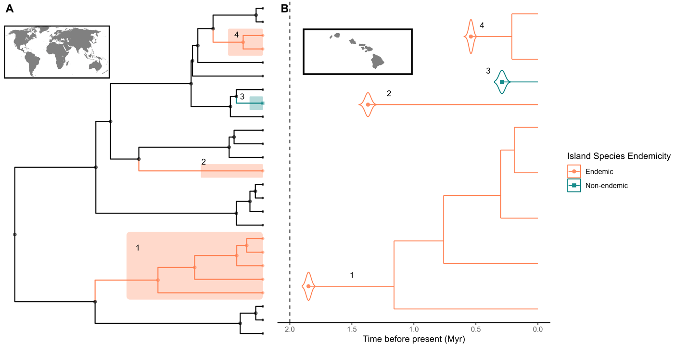

DAISIE FAQs
Q1 – What is DAISIE?
DAISIE (Dynamic Assembly of Islands through Speciation, Immigration and Extinction) is a modelling framework implemented in an R package that allows estimating rates of speciation (cladogenesis and anagenesis), colonisation, extinction and a carrying-capacity for a focal assemblage of island species based on phylogenetic information, for various macroevolutionary models of island assembly. It also allows simulating islands under rates for those processes. The method was first introduced in Valente, Phillimore & Etienne 2015.
Q2 – What is DAISIEprep?
DAISIEprep (Lambert et al 2023), is an R package that we have developed to help users prepare the data for running DAISIE analyses. It is not compulsory to use DAISIEprep, but it greatly helps! DAISIE and DAISIEprep are two separate R packages that can be independently installed from CRAN. DAISIEprep contains certain functions for extracting, plotting, and visualising data that can be useful for those working on island biogeography but who do not necessarily want to use DAISIE.
Q3 – What input data do I need to have to run a DAISIE model?
DAISIE uses an unconventional data format. Since a DAISIE analysis is centered on a focal island assemblage, it requires the times of colonisation and speciation events for all the lineages that make up the focal community. This information can come from various sources: a single phylogeny for your group of interest if available, several different phylogenies representing individual lineages that make up the focal community, values obtained from the literature, or a mix of sources. DAISIE can also handle some missing data (see below and Q14). There is no way around it: DAISIE is very data demanding! But that is why you can do very cool things with it 😊. DAISIE requires as input the following data:
Checklist of ALL native island species of your focal group (e.g., a list of all amphibians on an island; all plants on an island; all Orchidaceae species on an island; all passerine birds on an island).
Island endemicity status for each of those species: whether they are endemic to the island (occur only on the island) or whether they are non-endemic (occur on the island and also elsewhere)
Colonisation times for all the lineages of your focal group that have colonised the island (these can be extracted from phylogenies or from other estimates obtained from the literature)
Speciation times (branching events) for all the lineages that have speciated/radiated on the island (these can be extracted from phylogenies or from other estimates obtained from the literature)
Missing island lineages: island lineages of your focal group for which phylogenetic data is not available. An island lineage is a group of island species (one or more species) that descend from the same mainland species. So, for example, an island radiation is a lineage, but a single non-endemic species that has no close relatives on the island is also its own island lineage. For example, if no phylogenetic data is available for lineage x of your focal group, you need to tell DAISIE that lineage x is present on the island and also how many species belong to lineage x.
Missing island species: for island lineages for which phylogenetic data is available for some of the species but not others, you need to tell DAISIE the number of missing island species on the lineage.
Island age: An estimate of the geological age of the island (when did the island become available for colonisation, when did the island first emerge).
Mainland pool size: An estimate of the size of the mainland pool – how many species of the focal group occur on the mainland (e.g., a list of all amphibians on the mainland; all plants on an mainland; all Orchidaceae species on the mainland; all passerine birds on the mainland) and could have colonised the island.
Q4 – What kind of questions can be addressed with DAISIE?
We answer this FAQ by providing examples of questions that have already been addressed in different publications that have used DAISIE.
What are the rates of colonisation, speciation (cladogenesis and anagenesis) and extinction for an island or archipelago? Examples: Galápagos birds (Valente et al 2015), Caribbean frogs (Jiménez-Ortega et al 2023), fishes of Lake Biwa Japan (Hauffe et al 2020).
How does island area, dynamic connectivity, geological history affect phylogenetic and diversity patterns on islands? Examples: Hawaiian islands (Neves et al 2022), oceanic islands (Valente et al 2014).
How old are island lineages under different (simulated) scenarios? Examples: oceanic islands (Valente et al 2014), continental, oceanic and land-bridge islands (Neves et al 2022).
How does trait dependent diversification affect phylogenetic and diversity patterns on islands? Example: Simulated data (Xie et al 2023).
Is a radiation on an island exceptional? Examples: Darwin’s finches (Valente et al 2015), Caribbean frogs (Jiménez-Ortega et al 2023).
Do rates of colonisation, speciation and extinction differ between different types of species (e.g. species that can fly vs those that cannot)? Examples: bats and non-flying mammals of Madagascar (Michielsen et al 2023).
Is a focal island assemblage at equilibrium? Examples: Galápagos birds (Valente et al 2015), Caribbean bats (Valente et al 2017a), birds of Macaronesia (Valente et al 2017). Is diversity on the island governed by ecological limits and diversity dependence?
If diversity dependence is operating on the island, does it operate at the level of the clade (within island lineages) or the island (within and between island lineages)? Examples: Frogs of Caribbean (Etienne et al 2023), Galápagos birds (Valente et al 2015).
How long would an island take to recover diversity back to a pre-human diversity under natural rates of colonisation, speciation and extinction? Examples: birds of New Zealand (Valente et al 2019), bats of the West Indies (Valente et al 2017).
Do rates of colonisation, speciation and extinction vary through time? Can we detect temporal shifts in rates? Examples: fishes of Lake Biwa in Japan (Hauffe et al 2020).
If currently threatened species go extinct from an island, how long would it take to return to today’s diversity under natural rates of colonisation, speciation and extinction? Examples: birds of New Zealand (Valente et al 2019), mammals of Madagascar (Michielsen et al 2023).
How do speciation, extinction and colonisation rates vary with island area and isolation on a global scale? Example: birds of oceanic islands archipelagos worldwide (Valente et al 2020).
What do phylogenies of island taxa look like simulated under different scenarios? Examples: continental, land-bridge and oceanic islands (Neves et al 2022).
Q5 - I have a time-calibrated phylogeny – can I fit DAISIE to it?
Yes, but not immediately. Unlike most other phylogenetic methods, DAISIE does not use as input a phylogenetic tree (see Q1). In the context of DAISIE, phylogenies are simply used to extract times of colonisation and speciation and to identify island lineages resulting from different colonisation events. Therefore, you can use a single phylogeny or many different phylogenies to obtain this information. But you can even run DAISIE without any phylogeny at all, provided you have estimates for island colonisation and speciation times of your focal species (but these are usually obtained from phylogenetic information).
Q6 – What does an ideal DAISIE dataset look like?
The ‘ideal’ DAISIE dataset would be an island community dataset with colonisation and speciation times extracted from a time-calibrated phylogenetic tree (e.g. Figure 1) with complete sampling, in which all species of the focal group are included (preferably multiple individuals of the same species) as well as all of their closest non-island relatives. In practice this type of dataset is rare. For most insular communities, there may be a few well-sampled phylogenies available for some of the insular lineages, while other lineages may have poorly sampled phylogenies, and for some lineages there may be no dated phylogenetic data available at all. For some non-endemic species there may be individuals from the mainland sampled in the phylogeny, but not from the island. DAISIE can incorporate information from these heterogeneous data types.

Figure 1 – Visual representation of a typical dataset used in DAISIE analyses. Modified from Lambert et al 2023. In this hypothetical example, a focal island community on the Hawaiian archipelago has nine species. Panel A shows the wider global phylogeny in which the nine Hawaiian species are embedded (highlighted). Panel B shows the separate phylogenies of those island species from the perspective of the archipelago. Numbers on the plots link the corresponding lineages from each panel. The island community (B) consists of lineages resulting from four colonisation events, which are spread out in different topological locations in the tree of the taxonomic group at the global scale (A). Three of the island lineages contain exclusively species that are endemic to the island and one contains only a single non-endemic species. Two of the endemic lineages have undergone cladogenetic speciation on the island, forming island clades with more than one species. The colonisation time is assumed to be the divergence time from the mainland sister species (stem age).
Q7 – What should a focal island assemblage be in a DAISIE analysis?
The focal island assemblage (or focal community, or target group) can be defined by the user, but it should make biogeographical and ecological sense. It should be a group that can be defined by a common source pool on the mainland. For example, if you work on plants, you may choose to include all native species of plants, or focus just on a group of interest, such as all ferns, all Asteraceae, all angiosperms. If you work on birds, you may choose all bird species, but decide to exclude migratory species as these do not follow classic colonisation “rules”. What we do not recommend is cherry-picking lineages just because you have phylogenies for them, and then excluding others for which you have no phylogenetic data.
Q8 - I have a large phylogeny (e.g. a plant family, or a bird order) that includes many island species, can I run DAISIE?
Yes, but please note that DAISIE is meant to be applied to a specific island or archipelago. Just because your clade of interest has many island species, it does not mean DAISIE will be a good match for it. For example, if your group has 20 island species and each is found on a different island, then it may be difficult to have a suitable dataset to run DAISIE, because ideally you would need an island with multiple colonisation events by your focal group. (Note: you could run such an analysis if you assume that (most of) the rates of colonisation, extinction and speciation are similar across islands. See this study on Macaronesian birds).
Q9 - I have a phylogeny of an island radiation, can I apply DAISIE?
An island radiation results from a single colonisation event of the island so there is a single lineage. DAISIE is designed to estimate colonisation, speciation and extinction rates for an island assemblage composed of multiple independent colonist lineages, not for a single island lineage. Therefore, we do not recommend applying DAISIE if your focal group is a single radiation. If you are interested in a single island lineage, there are more appropriate lineage-specific phylogenetic methods than DAISIE, such as the diversity-dependent birth-death model implemented in the DDD R package (Etienne).
Q10 - I have compiled phylogenies for several plant (or animal) lineages from an island. Can I apply DAISIE?
Yes, but you should not apply DAISIE to just a few groups and ignore the other groups of your focal taxon that are present on the island. If there are plant (or animal) lineages on the island that belong to your focal group but for which phylogenetic data is not available, you need to “inform” DAISIE about those missing lineages. DAISIE needs to know how many lineages are missing from your focal group, and how many species belong to each of those missing lineages.
Q11 – Do I need to include non-endemic species, for example widespread species found in multiple islands and continents?
Yes! DAISIE is meant to be applied to native island assemblages. Therefore, both endemic and native non-endemic species are important! Do not include just the island endemics in your analyses, because you would be missing information on the natural colonisation events that gave rise to the non-endemics. You might therefore underestimate colonisation rates and overestimate anagenesis rates.
Q12 – Should I include non-native species (introduced by humans)?
No. Species introduced by humans should normally not be included in DAISIE analyses because they did not colonise under natural processes of colonisation. *But note - if you wanted to consider only species introduced by humans this could be possible, but this would constitute an unusual type of analysis, because the rate of colonisation is dependent on humans, not on the biogeography of the island.
Q13 – Can I apply DAISIE to a subset of island lineages for which I have phylogenies?
DAISIE is designed to estimate rates for a complete island assemblage (e.g. all amphibians on an island, all ferns on an archipelago). Therefore, it is not meant to be applied to just a subset of those lineages. So, for example, if you have an island that has 100 colonisation events of your focal taxon (some have radiated, others have not), it is not appropriate to just pick 40 for which phylogenetic data is available and exclude the other 60 colonists and their descendants. If you only have phylogenetic data for a subset of the island lineages of your focal taxon, you can still run DAISIE, but you need to include all the lineages for which no phylogenetic data is available as missing lineages.
Q14 – How much missing data is acceptable?
This is a good question that we do not yet have the answer to. Of course, the more complete the data, the better. So having colonisation and speciation times for the majority of your island species and lineages is preferred. But if you don’t have colonisation or speciation times for many of the lineages, you can still include them in the analyses by “informing” DAISIE that you know that they are present on the island but you just don’t know their colonisation or speciation times. This information is useful for DAISIE. We wouldn’t recommend doing this for all lineages and species because then DAISIE only knows that the species are there, but doesn’t have any temporal information to make inferences on. So in sum: the more phylogenetic data (colonisation and branching times) the better, but having many missing species or missing lineages is also fine!
Q15 - How to handle island species that are not monophyletic on the phylogeny?
For example, what to do when two island individuals of (presumably) the same species are retrieved in different positions in a phylogeny? In these cases the user should make a decision based on their knowledge of the taxa and system. If the user thinks that the non-monophyly may indicate that the taxon should be split into different species, then they may consider increasing the number of species in the island lineage, and, if appropriate, increasing the number of island colonisations (e.g. there may be cases where the same species colonised the island multiple times). If the user thinks the non-monophyly is due to incomplete lineage sorting or due to a mis-identification, then the user may consider revising the phylogeny, or choosing a node to infer the lineage age that reflects uncertainty (e.g. picking an older node and using this as maximum time of colonisation).
Q16 – How to define the number of species in the mainland pool?
The number of species in the mainland pool should be the number of species on the mainland that belong to your focal group that could have colonised the island since the island became available for colonisation. The mainland itself can be defined by the user depending on the location and isolation of the system (e.g. a nearby larger island, a continent). From our experience, varying the mainland pool affects the colonisation rate estimated in DAISIE, but does not alter other parameters or affect model selection (in general). If you are unsure about which mainland pool size to use, you may consider running sensitivity analyses using different mainland pool sizes, to see how that affects the results.
Q17 – How to obtain data on island age?
Island age estimates can be obtained from the biogeographical or geological literature (e.g. see the Methods section of Valente et al 2020 for the sources of the island ages used there).
Q18 – Can I use DAISIE without DAISIEprep?
Yes, you can prepare your DAISIE dataset “by eye” without using DAISIEprep. But DAISIEprep will be very useful if you have large datasets and it also greatly helps with reproducibility (and avoids trying to find clades in a phylogeny by eye, instead doing it automatically).